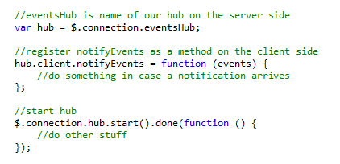
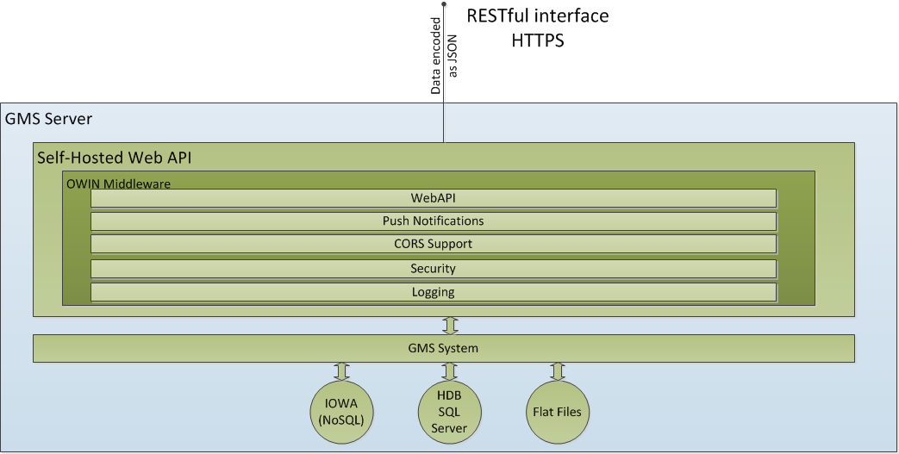
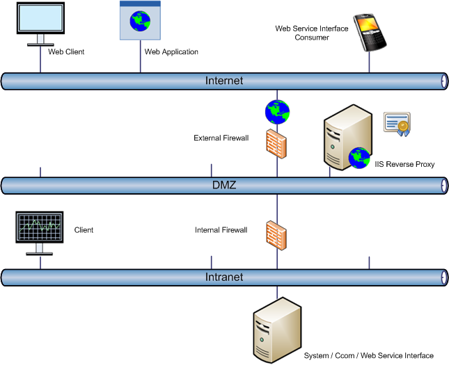

Using the Web Service Interface
Communication
The API can be accessed over HTTP or HTTPS. In a production environment it’s highly recommended to use HTTPS otherwise primary credentials are transmitted in plaintext.
Authentication
For authentication we use OAuth 2.0 Resource Owner Password Credentials Grant. In order to access a resource of the Web Service Interface the Client needs a valid access token and a valid session within the system. In case no token is presented or the token is invalid (for example, expired) or the system session is not available, the user will get a status code 401 (Unauthorized) and needs to request an access token. The access token can be requested through a dedicated resource (/token) by presenting the primary credentials. In case the credentials are provided, the system creates a new session and returns an access token.
- Client tries to access a resource.
- Server responses with status code 401
(Unauthorized). - Client asks the end-user for credentials.
- Client sends credentials to a dedicated resource.
- Server returns an access token, the system creates an internal session.
- Client again tries to access a resource and includes the access token in an authorization header.
- Server returns content with status code 200
(Succeeded).

NOTE:
The Client either needs to subscribe for notifications (for example, change of values) or needs to access the API at least once every 10 minutes otherwise its system session expires. The API provides a dedicated resource (/heartbeat) just for the sake of keeping a session alive.
Client Certificate Authentication
Optionally, a client can authenticate to the server by providing a client certificate. The Web Service Interface expects the client certificate to be provided in a header called X-ARR-ClientCert. In case the interface is accessed through a reverse proxy (almost always the case in a production environment), the reverse proxy asks the client for an optional client certificate. In this case the reverse proxy passes the client certificate to the backend server as HTTP header with the default header configured as X-ARR-ClientCert.
Subscriptions (Push Notifications with SignalR)
Optionally, for specified services the API provides not only data on request (pull) but also in case of an event determined by the respective service (push).
Any Client subscribing for any push notifications needs to support SignalR (see [2] [➙ 12]). The Client first needs to connect to a dedicated SignalR hub and can then subscribe for notifications by providing a connection ID which it gets after a connection between Client and server is established. The Client then needs to implement a function (see signature in respective service chapters) which will be called from the server in case a notification is due.

Latency Push Notification to Request-Response
In the workflow of subscription and notification it can happen that a push notification from server is received before the subscription success response. This latency will be experienced because of the network communication delay of the messages on two independent channels of SignalR hub connection for push notification and response of subscription request.
In this kind of scenario, Clients of WSI should consider received notification as a valid notification and design their solution accordingly.
Supported Client Environments
There are no Client dependencies except SignalR version 2.2.0 Client library for Clients interested in push notifications.
Deployment
The Web Service Interface will be deployed as a self-hosted component. It’s an executable and can be commanded as any other IOWA manager.

Depending on the deployment, it is likely that in a production environment, the Web Service Interface (and system) will only be accessible through a reverse proxy.
